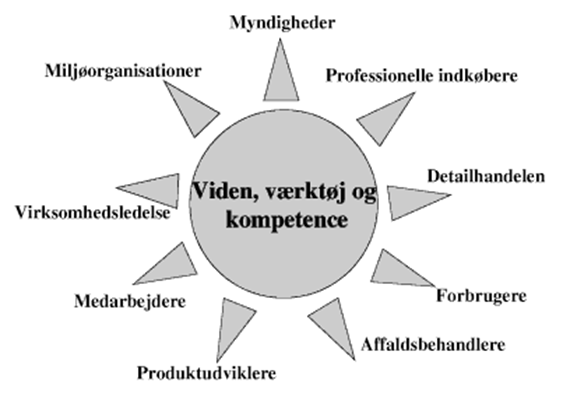

Miljøvurdering generelt
Bruges til:
- Virksomhed: Dokumentation overfor myndigheder, produktudvikling, marketing.
- Myndighed: Grundlag for forståelse af produktet, dialog, tilsyn, kontrol, lovgivning.
- 
Problematikker:
- Greenwashing
- Det irrelevante bevis: "indeholder ikke x", selvom x ikke er I nogle produkter.
- Det mindste af to onder: eks. Mindre miljøvenligt men stadig slet ikke miljøvenligt.
- Den falske mærkat
- Plantlagt teknisk svigt
- --> forbrugskultur
- --> elektronisk affald dumpes I Afrika, med den undskyldning at det er brugbart.
Generelt:
- Have et bilag med beregninger, uddybninger…
- Gør klart hvilke antagelser og begrænsninger der gøres.